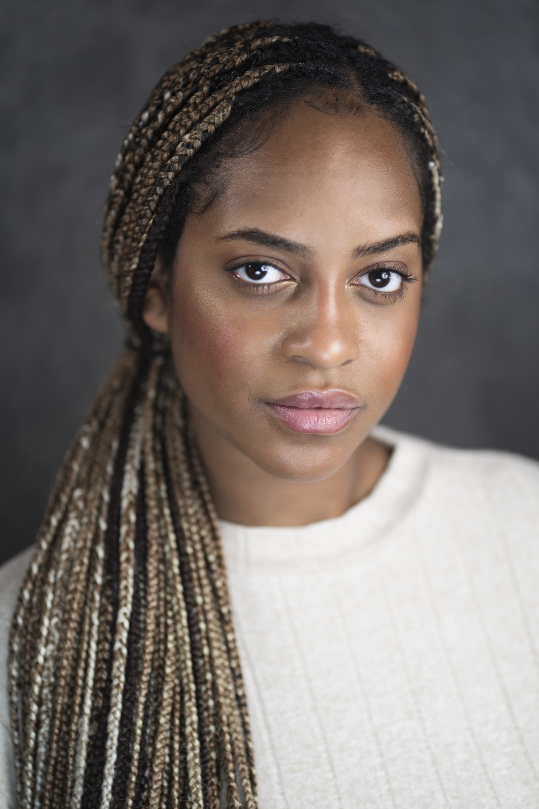
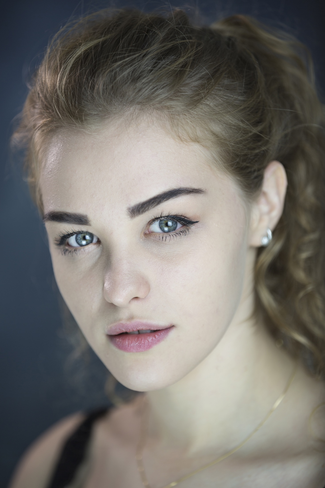

How to Prepare for Actor Headshots in London: What Casting Directors & Agents Look For on Spotlight
When a casting director in London opens a Spotlight submission grid, your thumbnail measures barely three centimetres across on their monitor. Before they ever click your showreel or read your CV credits, your headshot must communicate one unmistakable quality: emotional truth behind the eyes.


THE THEATRE DIRECTOR'S PERSPECTIVE
“A great actor headshot is never a static mask. It is a single frame lifted from an ongoing inner monologue.”
Because my career began in theatre and acting training in Rome before spending twenty years behind the camera, I approach every actor session as a scene study rather than a technical photo shoot.
1. Define Your Casting Archetypes Before Choosing Wardrobe
One of the most common mistakes actors make when booking actor headshots in London is bringing clothing they simply enjoy wearing in everyday life. Casting for West End theatre, BBC period drama, or Netflix procedural thrillers works on immediate visual shorthand.
In my sessions, I ask you to bring three to four distinct necklines and textures that suggest specific casting brackets without crossing into costume. Think structured wool overcoats or crisp collars for the high-stakes barrister or diplomat; breathable cotton crewnecks or layered denim for the grounded protagonist; and clean, dark asymmetric knits for contemporary dramatic roles.
2. Why Subtext Beats a Forced Smile Every Time
Agents and casting directors across London, New York, and Los Angeles immediately spot a “camera face”—when an actor locks their jaw, widens their eyes artificially, or forces a generic commercial smile. When I direct you in front of my lens, we work with breath and micro-intentions.
Instead of asking you to “look serious” or “look approachable,” I give you active playable thoughts: listening to someone who isn't telling you the whole truth, holding back a secret, or recognising an old friend across a crowded room. That shift immediately softens tension around the eyelids and mouth while igniting genuine presence.
3. Honest Skin Texture & Spotlight Technical Standards
Today's casting directors require uncompromising honesty. Over-smoothed, plastic retouching will get a headshot dismissed in seconds because casting needs to know exactly who will walk into the audition room or appear on a self-tape tomorrow morning. My retouching philosophy preserves every natural skin pore and permanent feature while removing only temporary blemishes or stray hairs, delivering colour-accurate files cropped to Spotlight, Mandy, and IMDb Pro specifications.